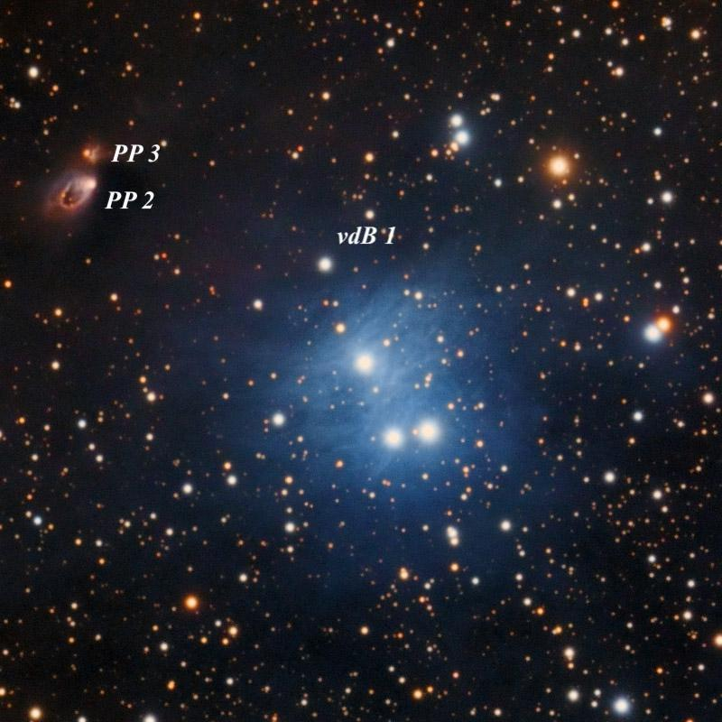
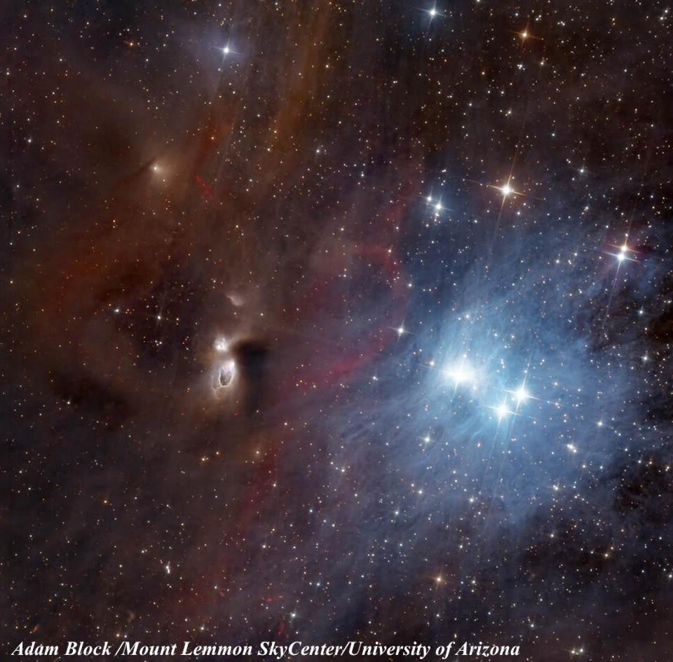

Reflection Nebula vdB 1 & Cometary Nebula PP 2
- Name: vdB 1
- Aliases: LBN 578, GN 00.08.0
- RA: 00h 10m 46.4s
- Dec: +58° 46' 10" (J2000)
- Constellation: Cassiopeia
- Type: Reflection Nebula
- Size: ~5'
- Illuminating star: Mag 8.3 HD 627 = BD+57 22
- Name: PP 2 (Parsamian-Petrosyan)
- Aliases: GN 00.08.8 = V633 Cas Nebula
- RA: 00h 11m 26.0s
- Dec: +58° 49' 29"
- Type: Cometary Nebula (Reflection)
- Size: ~40"
- Illuminating star: V633 Cas = LkHa 198
vdB 1 is a relatively bright, easy to find reflection nebula, conveniently situated just 25' SSE of 2.3-magnitude Beta Cas or Caph. Why isn't it better known? I have no idea, but it should be! vdB 1 is the first object in Sidney van den Bergh's 1966 catalogue of 158 reflection nebulae. He coded the color (on the POSS) as "very blue" and the surface brightness as "bright". The glow encompasses a bright triangle of 8th-magnitude stars, including HD 627 = BD+57° 22 (spectral type B7V) and a wide pair of 8th-magnitude stars (HD 594 and HD 236327) at 39" separation. I estimated the size ~3' diameter using my 18", though the boundary was irregularly shaped. Out of curiosity, I tried a broadband DeepSky filter, and it darkened the background considerably and sharpened the contrast with the sky around the periphery, making the border easier to trace. This image is from the late Rick Johnson.

Just 6' NE of vdB 1 is the mag 13-14 Herbig Ae/Be star V633 Cas, also known as LkHa 198. V633 Cas, along with fainter V376 Cas just 0.6' N, was included in George Herbig's first list of pre-main-sequence Herbig Ae/Be stars. These stars are of medium mass and luminosity, but they exhibit emission line features and an infrared excess, which indicates dust in their circumstellar envelopes. Both stars lie in the dark cloud LDN 1265, which is a mostly starless region to the northeast of vdB 1.
A remarkable loop nearly 40" diameter, quite evident on the POSS, extends southeast of V633 Cas. This loop is the second object (PP 2) in the 1979 "Catalogue of cometary nebulae and related objects" by Byurakan Observatory astronomers Elma Parsamian and V.M. Petrosian. Elma turned 94 in 2023 and a press release detailing her research accomplishments is here.
The loop is thought to be a windblown cavity in the dark cloud traced by a directed optical and molecular outflow. The most likely source to drive the molecular CO outflow is an infrared star just 6" north V633 Cas, known as V633 Cas B. Visually, PP 2 appeared to me as a faint, very small glow surrounding the star. It was picked up unfiltered and extended ~ 15" in diameter.
The young star V376 Cas just north of V633 is about 15th magnitude and it's also surrounded by a small circumstellar shell and reflection nebula known as PP 3. I didn't notice PP 3 in this observation, though I didn't specifically look for it. In addition, there are several HH (Herbig-Haro) objects in this region, including HH 161, just 12" ESE of V633, and two HH flows associated with V376 (HH 162 and 164). Adam Block's image captures the beauty of this region.

Now it's your turn...
GIVE IT A GO AND LET US KNOW!
Steve's follow-up — September 21st, 2025, 08:27 PM
I included LBN 578 as an alias for vdB 1, but didn't use it as the primary designation since if others search for images or additional info online, it will most likely be found using "vdB 1".
By the way, HD 627 has the double star designation BU 485. Burnham suspected the star was double with the 9.4-inch refractor at the Dartmouth observatory and later confirmed it with their 18.5-inch refractor. The separation was only 0.4" in 1878 (he estimated the components at magnitude 8.5), but the most recent measure has it as close as 0.1".
Steve